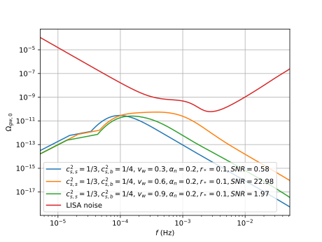

PTtools
Inputs
| $v_w$ | Wall speed |
| $\alpha_n$ | Transition strength |
| $T_*$ | Temperature at GW formation |
| $g_*$ | Degrees of freedom at GW formation |
| $r_*$ | Hubble-scaled mean bubble spacing |
| or | or |
| $\frac{\beta}{H_*}$ | Nucleation rate parameter |
| $c_s(T,\phi)$ | Speed of sound, e.g. bag $c_s=\frac{1}{\sqrt{3}}$ |
| or | or |
| $p(T,\phi)$ | Equation of state |
🠮
Sound Shell Model
- 1-bubble hydrodynamics:
fluid shell profile - n-bubble averaging:
spectral density of velocity field - GWs from sound waves
- Correction factors
- Redshift $(z \rightarrow f_0)$
- SNR comparison with LISA noise
))
🠮
Outputs

- GW spectra
- SNR with respect to LISA noise